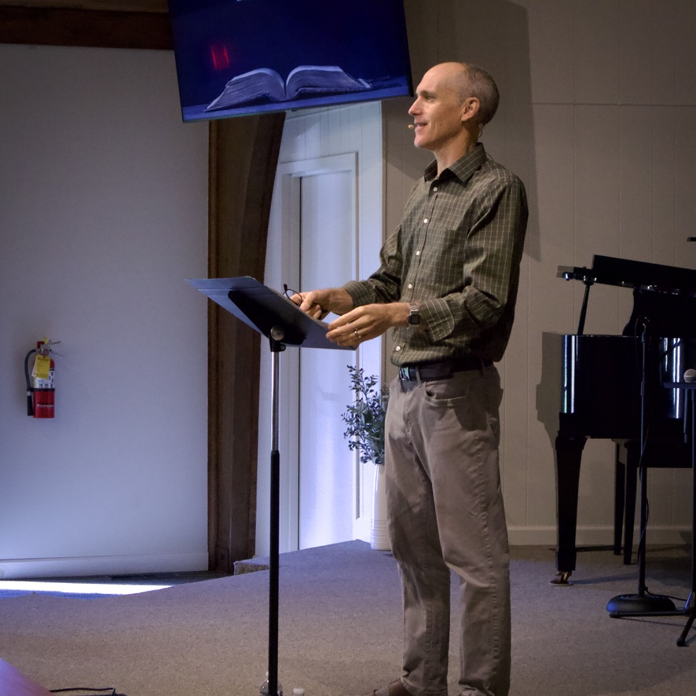
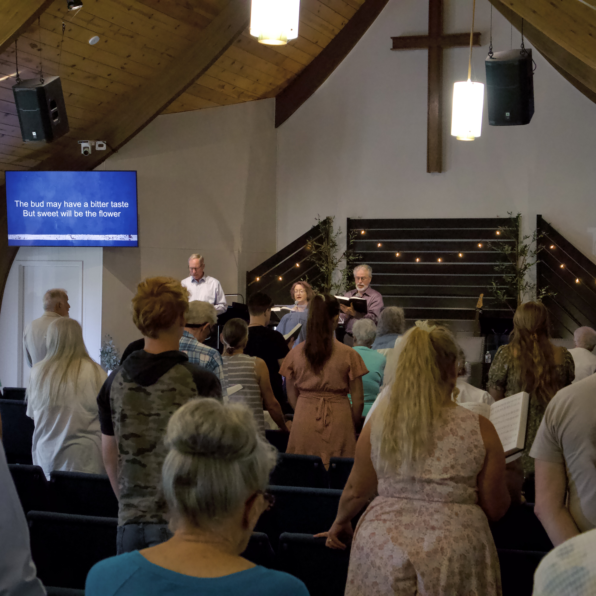
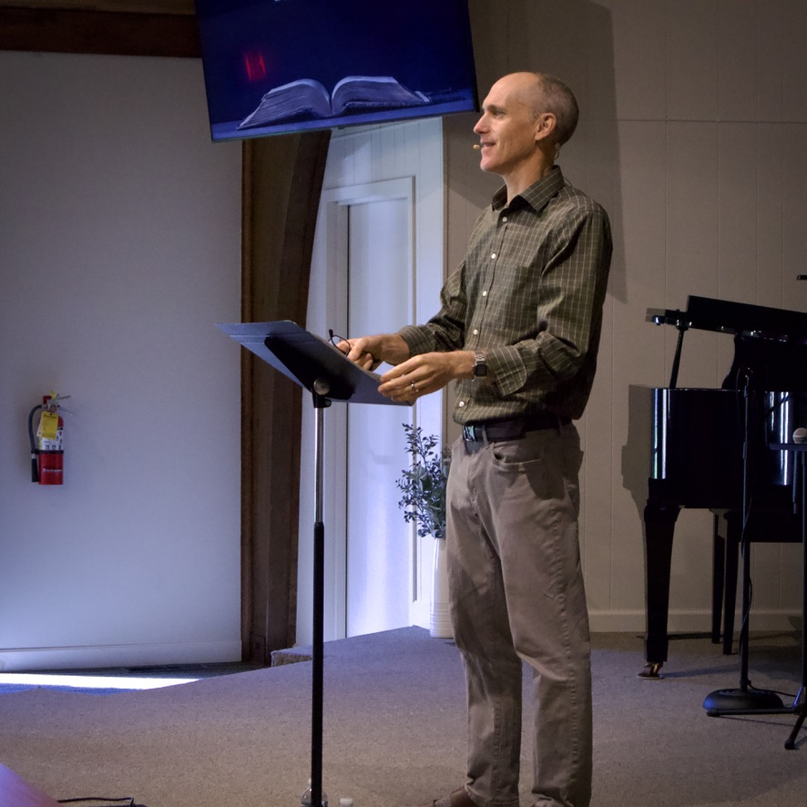
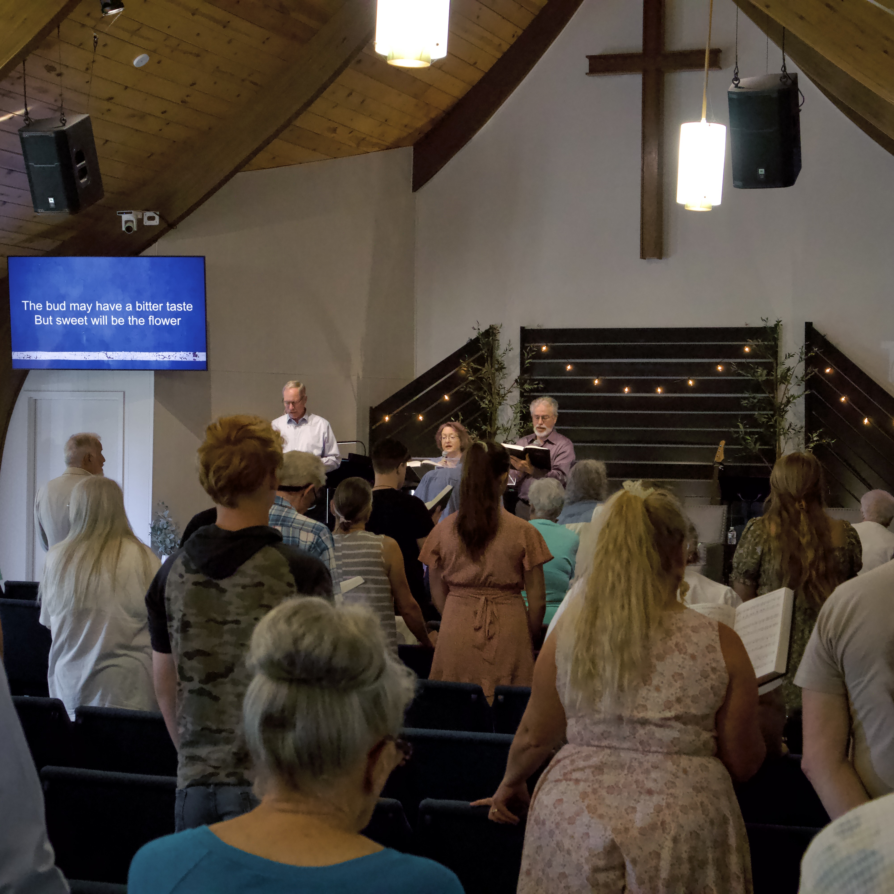
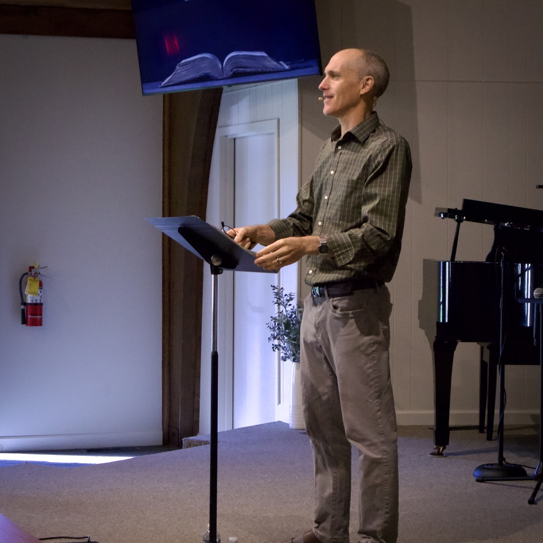
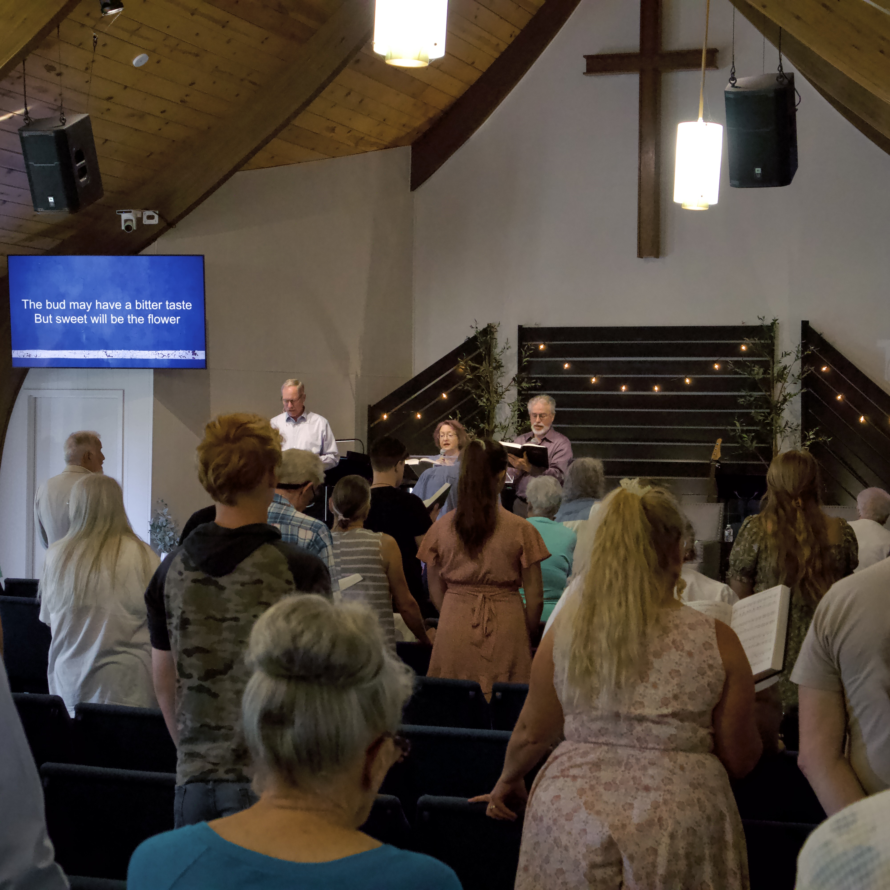

Kokomo Christian Fellowship is a place where people can meet Jesus, engage in life-giving community, and everyone is welcome. We believe in creating a space where people can have authentic encounters with Christ, discover their gifts and use them for God's glory.
Kokomo Christian Fellowship, located at 600 S Dixon Rd, Kokomo, IN, holds services on Sunday mornings at 10:00 AM (in-person and online) and Thursday nights at 6:00 PM (in-person), offering opportunities for worship, teaching, and fellowship in a welcoming environment.
At Kokomo Christian Fellowship, we don’t have a formal dress code. You’ll find that some people like to dress up, while others prefer to come in more casual attire. Our focus is on worshipping God together, not what you wear. Whether you feel comfortable in jeans and a T-shirt or in your Sunday best, you are welcome just as you are!
We meet at 10:00 AM on Sunday mornings (in-person and online) and at 6:00 PM on Thursday nights.
At Kokomo Christian Fellowship, we offer engaging programs for children of all ages! We have classes for kids aged 4-11, where they can learn about God through fun activities, Bible lessons, and interactive discussions. For our youngest attendees, we provide a safe and nurturing nursery for babies and toddlers, so parents can enjoy the service knowing their little ones are well cared for.
Yes, we have a youth group.
At our church, we sing a blend of contemporary worship songs and traditional hymns. This mix allows us to embrace both the richness of classic hymns and the freshness of modern music, creating a worship experience that resonates with people of all ages. Whether you enjoy familiar hymns or newer praise songs, there’s something for everyone to connect with as we come together in worship.
Typically, our services are about 90 minutes in duration.
Yes, we have a coffee bar available, offering a variety of beverages before and after services.

